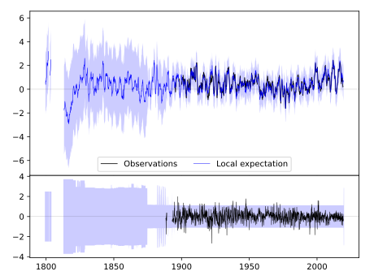
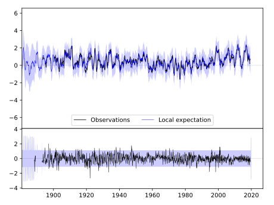
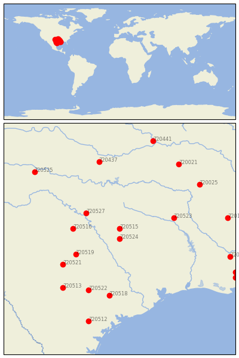

MEXIA [USA]


| Neighbour | Name | Country | Distance | Lon/Lat | Years |
|---|
| 720524 | MEXIA | USA | 0 | -96.5, 31.7 | 1888-2019 |
| 720515 | CORSICANA | USA | 44 | -96.5, 32.1 | 1874-2019 |
| 720527 | WEATHERFORD | USA | 165 | -97.8, 32.7 | 1893-2019 |
| 720519 | LAMPASAS | USA | 174 | -98.2, 31.1 | 1888-2019 |
| 720516 | DUBLIN 2SE | USA | 175 | -98.3, 32.1 | 1893-2019 |
| 720523 | MARSHALL | USA | 216 | -94.4, 32.5 | 1893-2019 |
| 720521 | LLANO | USA | 236 | -98.7, 30.7 | 1891-2019 |
| 720518 | HALLETTSVILLE 2 N | USA | 247 | -96.9, 29.5 | 1891-2019 |
| 720522 | LULING | USA | 250 | -97.7, 29.7 | 1882-2019 |
| 720513 | BOERNE | USA | 298 | -98.7, 29.8 | 1878-2019 |
| 720437 | PAULS VALLEY 4 WSW | USA | 341 | -97.3, 34.7 | 1892-2019 |
| 720025 | PRESCOTT 2 NNW | USA | 372 | -93.4, 33.8 | 1882-2019 |
| 720512 | BEEVILLE 5 NE | USA | 374 | -97.7, 28.5 | 1893-2019 |
| 720021 | MENA | USA | 387 | -94.2, 34.6 | 1889-2019 |
| 720195 | CALHOUN RSCH STN | USA | 405 | -92.3, 32.5 | 1888-2019 |
| 720194 | BUNKIE | USA | 415 | -92.2, 31.0 | 1882-2019 |
| 720525 | QUANAH 2 SW | USA | 422 | -99.8, 34.3 | 1891-2019 |
| 720441 | WEBBERS FALLS 5 WSW | USA | 439 | -95.2, 35.5 | 1892-2019 |
| 720199 | GRAND COTEAU | USA | 452 | -92.0, 30.4 | 1888-2019 |
| 720202 | LAFAYETTE FCWOS | USA | 460 | -92.0, 30.2 | 1884-2019 |